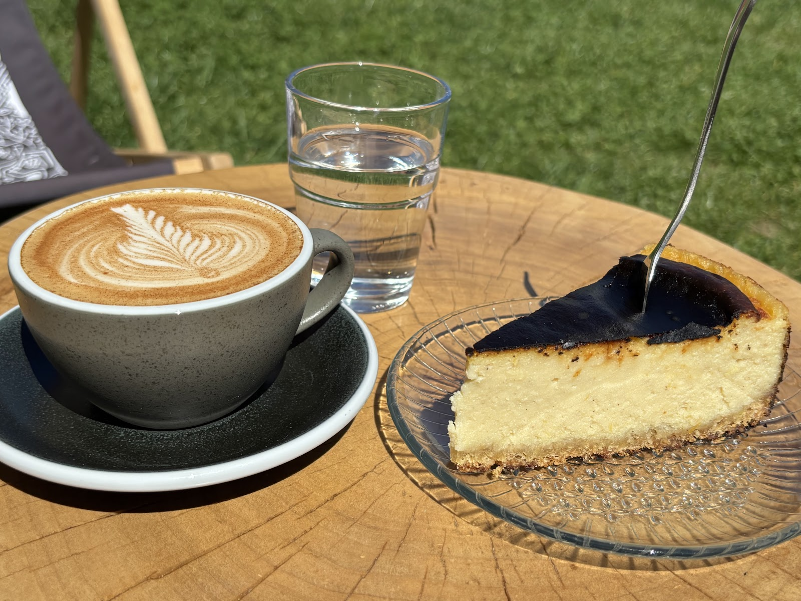
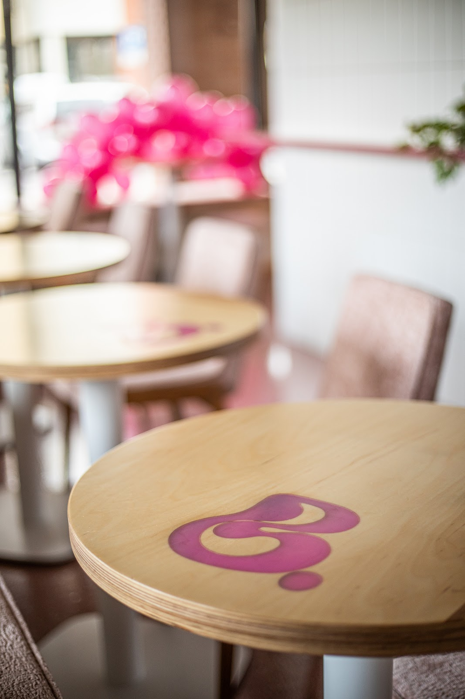
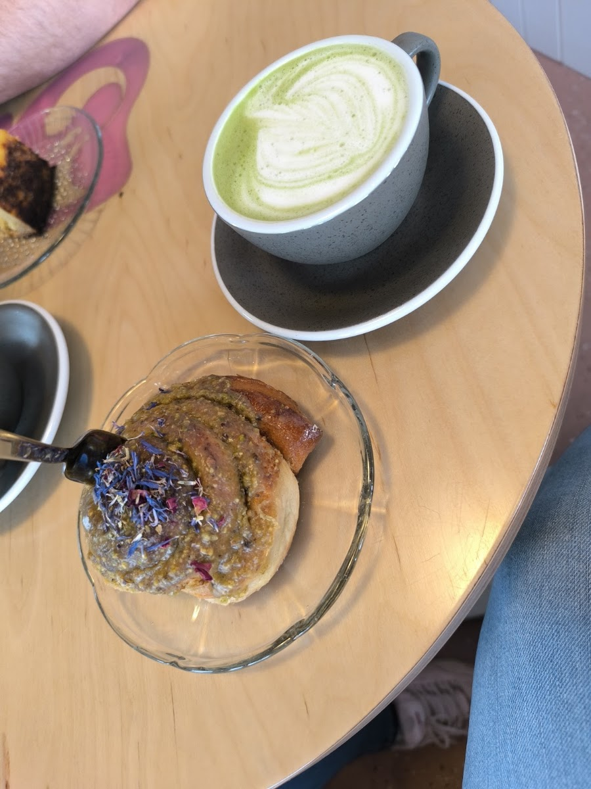
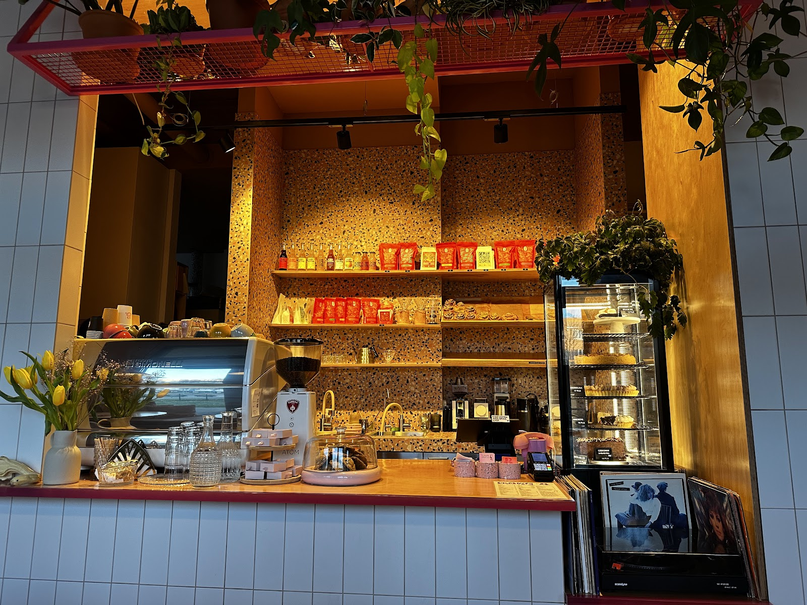
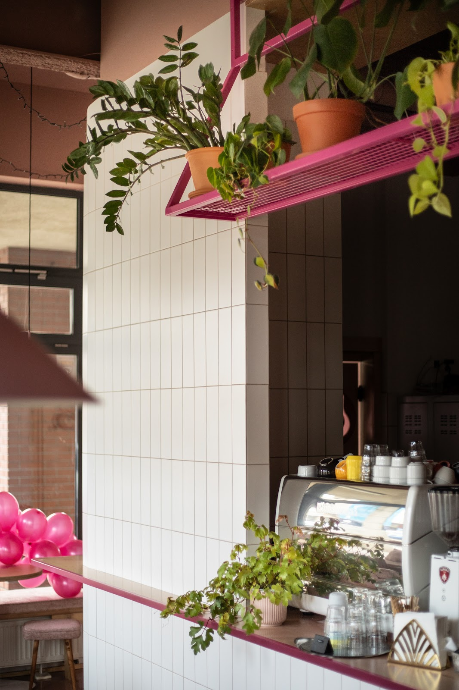
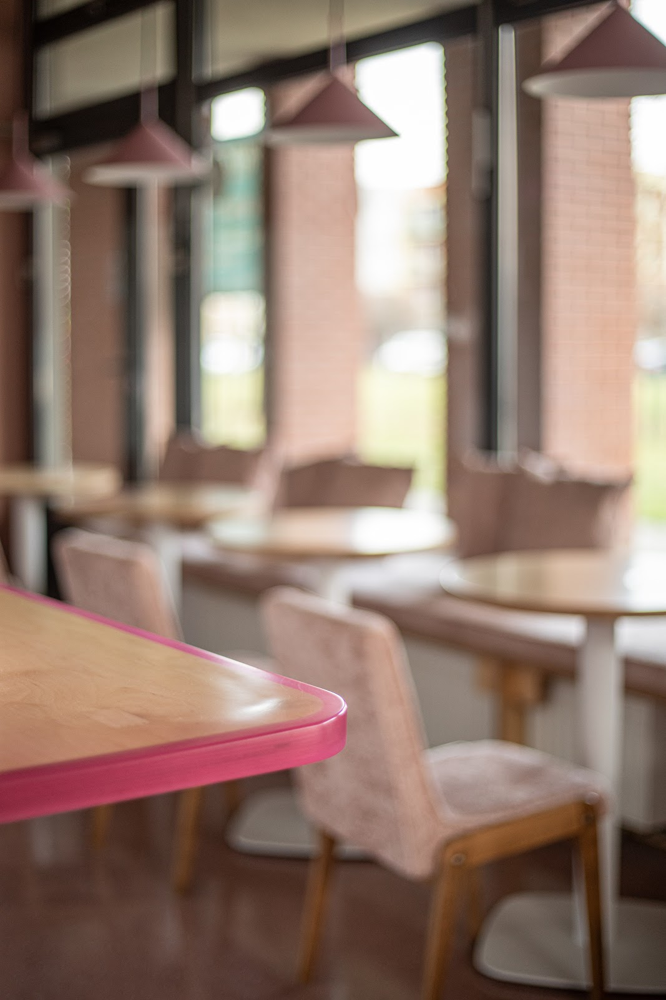
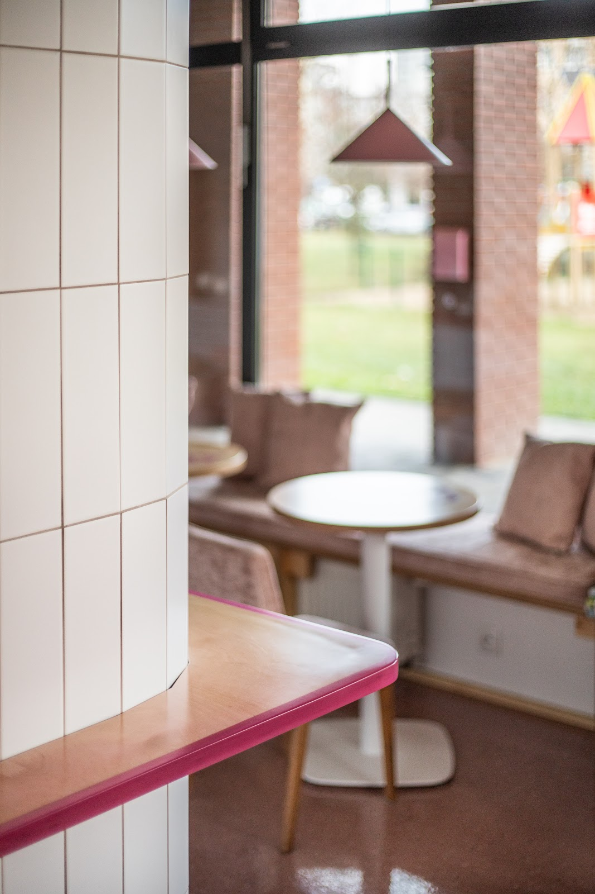
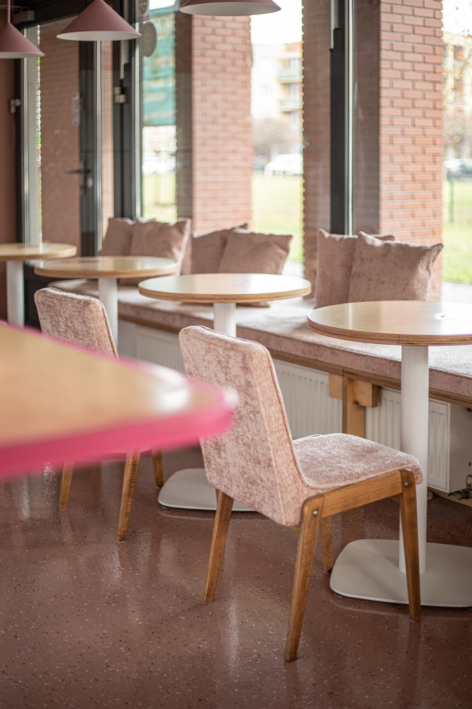

Badylarnia to kameralna, roślinna kawiarnia prowadzona przez kobiety — kawa speciality, wegańskie słodkości bez jajek i mleka (część bezglutenowa), wytrawne śniadania i torty na zamówienie. Ludzie i pieski mile widziani.


Badylarnia to roślinna kawiarnia prowadzona przez kobiety, w której pnącza monster i pelargonii mieszają się z zapachem świeżo mielonej kawy speciality.
Wszystkie nasze słodkości — od cynamonek po torty na zamówienie — powstają bez jajek i mleka, a spora część ma też wersję bezglutenową. Do tego wytrawne śniadania, rozgrzewające napary i wnętrze, w którym chce się zostać na dłużej — z laptopem, dobrą książką albo psem u nogi.
Starannie wyselekcjonowane ziarna parzone z uwagą na każdy detal — od espresso po flat white.
W pełni roślinne wypieki własnej roboty, część w wersji bezglutenowej — Cynamonki i Pistacjanki znikają pierwsze.
Sycące, świeże i robione na miejscu — idealne na leniwy poranek albo szybką przerwę w pracy.
Wege i dla alergików, na urodziny, wesela i inne okazje — zapytaj telefonicznie o dostępny termin.

Kliknij danie, żeby zobaczyć, jak wygląda na żywo — to prawdziwe zdjęcia naszych gości.





„Duża niespodzianka! Lokal zaskoczył nas na wiele sposobów. Super jedzenie, mega klimat (pieski mile widziane), obsługa na najwyższym poziomie. Mogliśmy sami wybrać płytę z muzyką. Kawa pyszna i ciastka rewelacja.”
„Przepyszne bezglutenowe wypieki! Pistacjanki i cynamonki GF — petarda, chcę to jeść już zawsze! Piszę to bez żadnego koloryzowania, a z samego serducha. 10000/10, serio.”
„Mówi się, że miejsce tworzy ludzi, ale tutaj jest odwrotnie — to ludzie tworzą to miejsce! Bardzo lubię ich cynamonki, pistacjanki i brownie — a to i tak nie wszystko, co warto tu spróbować.”
| Wtorek | 08:00–17:00 |
| Środa | 08:00–17:00 |
| Czwartek | 08:00–17:00 |
| Piątek | 08:00–19:00 |
| Sobota | 09:00–19:00 |
| Niedziela | Zamknięte |
| Poniedziałek | Zamknięte |